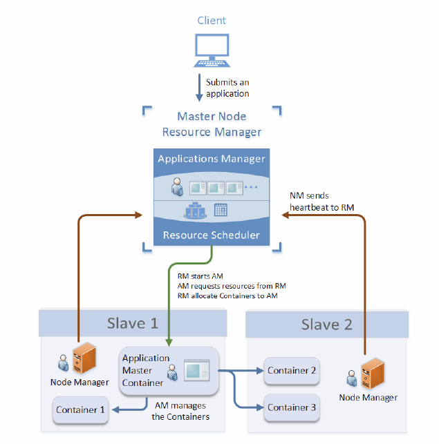
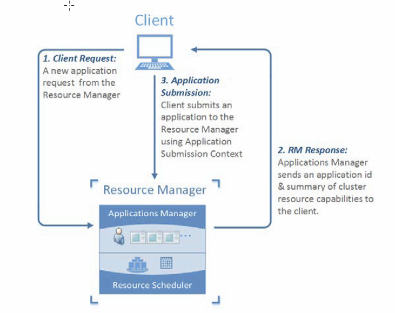
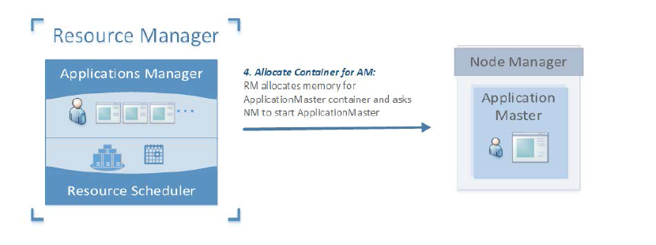
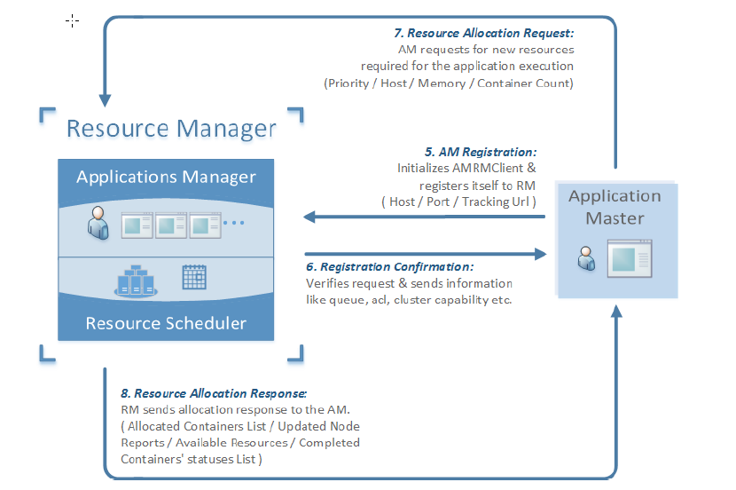
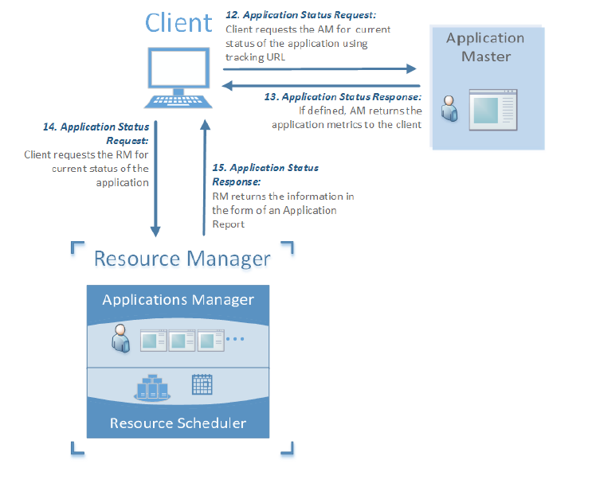
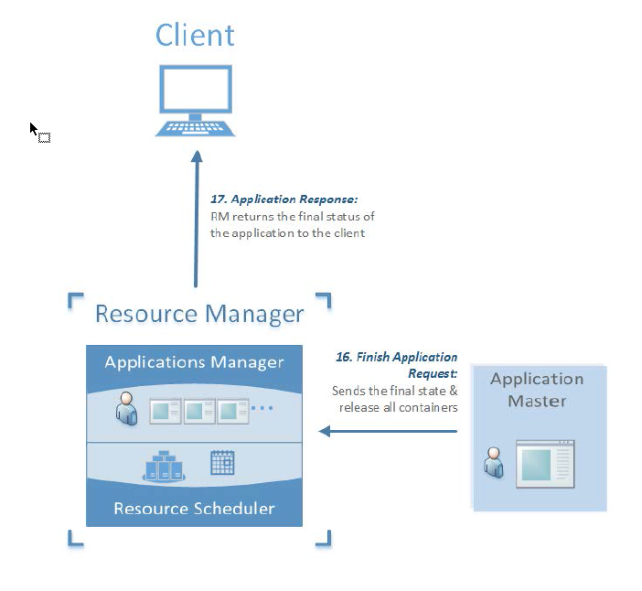

Table of Contents
- 1. Catalog
[25%]- 1.1. DONE Chapter 1：Starting with Yarn Basics
- 1.2. TODO Chapter 2：Setting up a Hadoop-Yarn Cluster
- 1.3. TODO Chapter 3: Administering a Hadoop-YARN Cluster
- 1.4. DONE Chapter 4: Executing Applications Using YARN
- 1.5. DONE Chapter 5: Understanding YARN Life Cycle Management
- 1.6. TODO Chapter 6: Migrating from MRv1 to MRv2
- 1.7. TODO Chapter 7: Writing Your Own YARN Applications
- 1.8. TODO Chapter 8: Dive Deep into YARN Components
- 1.9. TODO Chapter 9: Exploring YARN REST Services
- 1.10. TODO Chapter 10: Scheduling YARN Applications
- 1.11. TODO Chapter 11: Enabling Security in YARN
- 1.12. TODO Chapter 12: Real-time Data Analytics Using YARN
- 2. Overview
- 3. Architecture
- 4. Feature
- 5. Executing Application on Yarn
1 Catalog [25%]
1.1 DONE Chapter 1：Starting with Yarn Basics
- CLOSING NOTE
1.2 TODO Chapter 2：Setting up a Hadoop-Yarn Cluster
1.3 TODO Chapter 3: Administering a Hadoop-YARN Cluster
1.4 DONE Chapter 4: Executing Applications Using YARN
- CLOSING NOTE
1.5 DONE Chapter 5: Understanding YARN Life Cycle Management
- CLOSING NOTE
1.6 TODO Chapter 6: Migrating from MRv1 to MRv2
1.7 TODO Chapter 7: Writing Your Own YARN Applications
1.8 TODO Chapter 8: Dive Deep into YARN Components
1.9 TODO Chapter 9: Exploring YARN REST Services
1.10 TODO Chapter 10: Scheduling YARN Applications
1.11 TODO Chapter 11: Enabling Security in YARN
1.12 TODO Chapter 12: Real-time Data Analytics Using YARN
2 Overview
- ResourceManager
A ResourceManager is a per cluster service that manages the scheduling of compute resources to applications. It optimizes cluster utilization in terms of memory, CPU cores, fairness, and SLAs.To allow different policy constraints, it has algorithms in terms of pluggable schedulers such as capacity and fair that allows resource allocation in a particular way.- Scheduler
This is a pure pluggable component that is only responsible for allocating resources to applications submitted to the cluster, applying constraint of capacities and queues.Scheduler does not provide any guarantee for job completion or monitoring, it only allocates the cluster resources governed by the nature of job and resource requirement.- ApplicationsManager(AsM)
This is a service used to manage application masters across the cluster that is responsible for accepting the application submission, providing the resources for application master to start, monitoring the application progress, and restart, in case of application failure.
- NodeManager
The NodeManager is a per node worker service that is responsible for the execution of containers based on the node capacity.Node capacity is calculated based on the installed memory and the number of CPU cores. The NodeManager service sends a heartbeat signal to the ResourceManager to update its health status. NodeManager also sends the status to ResourceManager, which could be the status of the node on which it is running or the status of tasks executing on it.- ApplicationMaster
- An ApplicationMaster is a per application framework-specific library that manages each instance of an application that runs within YARN. YARN treats
ApplicationMaster as a third-party library responsible for negotiating the resources from the ResourceManager scheduler and works with NodeManager to execute thetasks.The ResourceManager allocates containers to the ApplicationMaster and these containers are then used to run the application-specific processes.ApplicationMaster also tracks the status of the application and monitors the progress of the containers. When the execution of a container gets complete, the ApplicationMaster unregisters the containers with the ResourceManager and unregisters itself after the execution of the application is complete. - Container
A container is a logical bundle of resources in terms of memory, CPU, disk, and so on that is bound to a particular node.The ResourceManager scheduler service
dynamically allocates resources as containers. A container grants rights to an ApplicationMaster to use a specific amount of resources of a specific host. An ApplicationMaster is considered as the first container of an application and it manages the execution of the application logic on allocated containers.
3 Architecture

- The ResourceManager service runs on the master node of the cluster.
- A YARN client submits an application to the ResourceManager. An application can be a single MapReduce job, a directed acyclic graph of jobs, a java application, or any shell script.
- The client also defines an ApplicationMaster and a command to start the ApplicationMaster on a node.
- The ApplicationManager service of resource manager will validate and accept the application request from the client.
- The scheduler service of resource manager will allocate a container for the ApplicationMaster on a node and the NodeManager service on that node will use the command to start the ApplicationMaster service.
- Each YARN application has a special container called ApplicationMaster. The ApplicationMaster container is the first container of an application.
- The ApplicationMaster requests resources from the ResourceManager. The RequestRequest will have the location of the node, memory, and CPU cores required.
- The ResourceManager will allocate the resources as containers on a set of nodes.
- The ApplicationMaster will connect to the NodeManager services and request NodeManager to start containers.
- The ApplicationMaster manages the execution of the containers and will notify the ResourceManager once the application execution is over. Application execution and progress monitoring is the responsibility of ApplicationMaster rather than ResourceManager.
- The NodeManager service runs on each slave of the YARN cluster. It is responsible for running application's containers. The resources specified for a container are taken from the NodeManager resources. Each NodeManager periodically updates ResourceManager for the set of available resources. The ResourceManager scheduler service uses this resource matrix to allocate new containers to ApplicationMaster or to start execution of a new application.
4 Feature
- Scalability and higher cluster utilization
In YARN, the responsibility of resource management and job scheduling / monitoring is divided into separate daemons, allowing YARN daemons to scale the cluster without degrading the performance of the cluster.With a flexible and generic resource model in YARN, the scheduler handles an overall resource profile for each type of application. This structure makes the communication and storage of resource requests efficient for the scheduler resulting in higher cluster utilization.- High availability for components
- Fault tolerance is a core design principle for any multitenancy platform such as YARN. This responsibility is delegated to ResourceManager and ApplicationMaster.
The application specific framework, ApplicationMaster, handles the failure of a container. The ResourceManager handles the failure of NodeManager and ApplicationMaster. - Flexible resource model
- In YARN, a resource-request is defined in terms of memory, CPU, locality, and so on. It results in a generic definition for a resource request by an application. The NodeManager node is the worker node and its capability is calculated based on the installed memory and cores of the CPU.
- Multiple data processing algorithms
- YARN is developed with a need to perform a wide variety of data processing over the data stored over Hadoop HDFS. YARN is a framework for generic resource management and allows users to execute multiple data processing algorithms over the data.
- Log aggregation and resource localization
- To manage user logs, YARN introduced a concept of log aggregation. In YARN, once the application is finished, the NodeManager service aggregates the user logs related to an application and these aggregated logs are written out to a single log file in HDFS. To access the logs, users can use either the YARN commandline options, YARN web interface, or can fetch directly from HDFS.
5 Executing Application on Yarn
5.1 Phase 1 - Application initialization and submission

- In the first phase of application execution,
a client will connect to the applications manager service of the ResourceManager daemon and will request the ResourceManager for a new application ID. - The ResourceManager will validate the client request and if the client is an authorized user,
it will send a new and unique application ID, along with the cluster metrics to the client. The client will use this application ID, and will submit an application to the ResourceManager.The client will send ApplicationSubmissionContext along with the submission request. The submission context contains metadata information related to an application, such as application queue, name, and so on. It also contains the information to start the ApplicationMaster service on a particular node. The application submission is a blocking call which waits for the application completion.In the background, the ResourceManager service will accept the application and will allocate containers for application execution.
5.2 Phase 2 - Allocate memory and start ApplicationMaster

- The ResourceManager daemon starts an ApplicationMaster service on any of the NodeManager node. The scheduler service within the ResourceManager is responsible for the node selection. The basic criteria for selecting a node for the ApplicationMaster container is that the amount of memory required by the ApplicationMaster service should be available on that node.
- The ApplicationSubmissionContext submitted by the client contains LaunchContext for the ApplicationMaster's container. The LaunchContext contains information such as the memory requirements for ApplicationMaster, command to start the ApplicationMaster, and so on.
- The scheduler service of the ResourceManager daemon allocates memory specified in the LaunchContext and sends the context a NodeManager node to start the ApplicationMaster service.
5.3 Phase 3 – ApplicationMaster registration and resource allocation

- ApplicationMaster's container creates clients to communicate with the ResourceManager and NodeManager of the cluster.
- The ApplicationMaster then registers itself with the ResourceManager using the AMRMClient service. It specifies the host and port for the container it is running on. While developing an application, a developer can also use AMRMClientAsync, an asynchronous implementation of the AppMaster ResourceManager client. It also sends a tracking URL for the application. The tracking URL is an application specific framework used to monitor the application execution.
- The ResourceManager sends back the registration response with information related to access control lists, cluster capabilities, and access tokens
- The ApplicationMaster requests the ResourceManager for containers allocation on the NodeManager nodes to execute the application tasks. The request includes the desired capabilities of the worker containers in terms of memory and CPU cores with the application priority. The optional parameters include nodes and racks specifications for execution of containers.
- The ResourceManager iterates the list of asked containers, filters out the blacklisted
containers, and creates a list of containers to be released.
5.4 Phase 5 – Application progress report

- An application specific framework to monitor the application is exposed through the tracking URL for that application. The YARN client uses the tracking URL to
monitor the current status of an application. The tracking URL generally contains the application metrics. For example, if the application is a MapReduce job, then the tracking URL will expose the list of mappers and reducers for the job,
5.5 Phase 6 - Application completion

- On completion of an application, the ApplicationMaster sends out an un-registration request to the ResourceManager.
- The ApplicationMaster terminates itself and releases the used memory back to the NodeManager. For an application, there is a final state and a final status. The ResourceManager marks the final state of the application as FINISHED. The final status of the application is set by the ApplicationMaster and is specific to the application executed.
- The YARN client may interrupt the application execution at any point by sending a kill request to the ResourceManager. The ResourceManager kills the running containers for that application and changes the application status to completed.